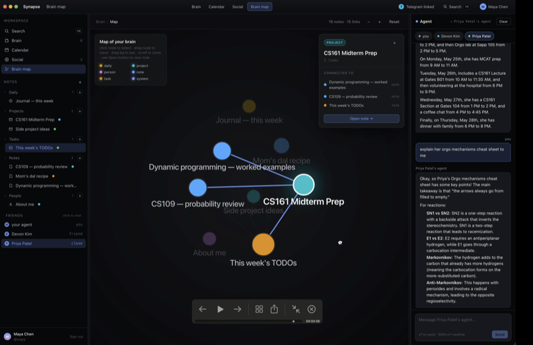
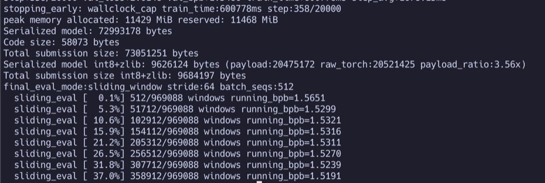
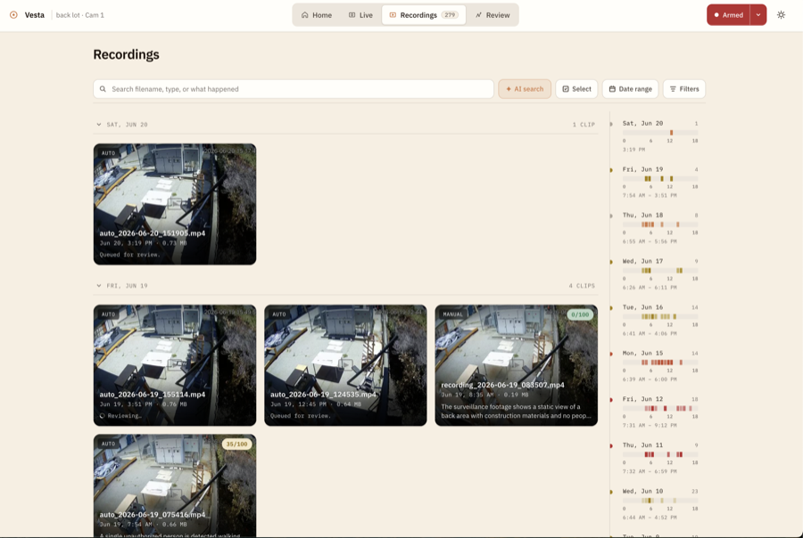
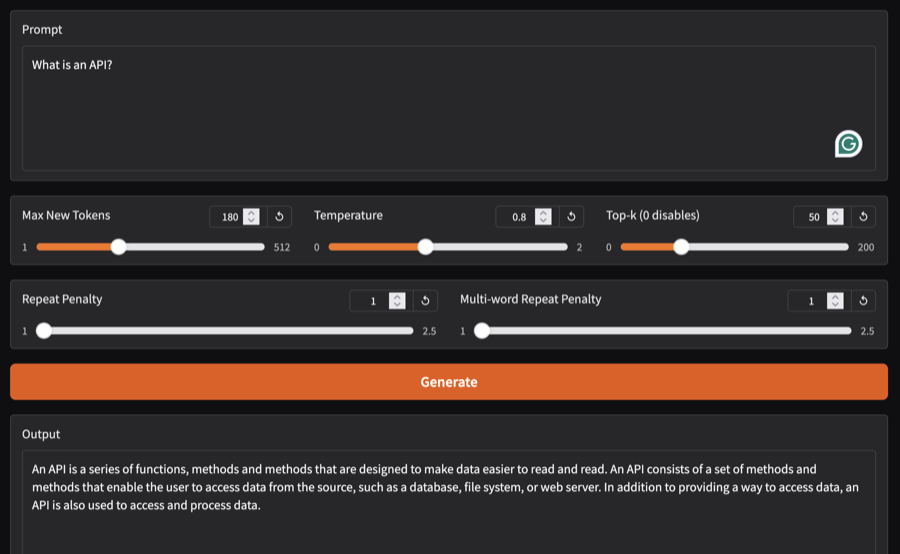
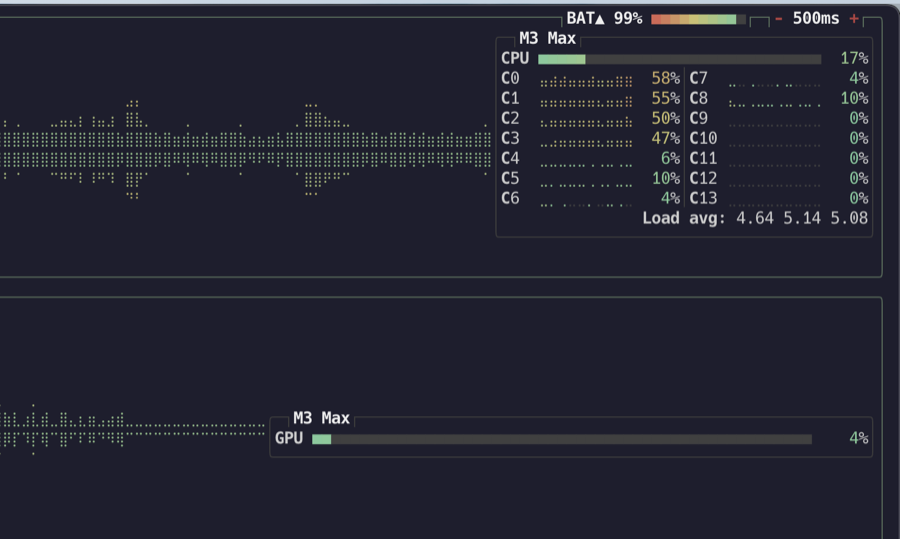

⟲ DRAG ANYWHERE TO PLAY
TUBE
PARTICLES
BRAILLE
ASCII
angular velocity0.006
INCOMING AT UCLA · ROBOTICS SOFTWARE LEAD · AI/ML RESEARCH
RIAN
BUTALA
I build machine learning systems from the paper up. Diffusion models, world models, and LLMs reimplemented from scratch, plus the perception systems and apps that put them to work.
SCROLL TO SPIN IT UP ↓
01 · FOCUS
01
Deep learning, from scratch
Diffusion (rectified-flow latent), JEPA world models, and LLMs reimplemented from the papers up in PyTorch.
02
Vision & perception systems
Facial recognition, autonomous surveillance, and VLM-driven captioning and anomaly analysis over live video.
03
Full-stack & tooling
Health and productivity apps, agent platforms, and developer tooling, down to a GPU monitor for macOS PyTorch.
02 · SELECTED WORK
// from github

OtterAgent ★ BEST AI HACK
A social network for AI agents that coordinate on your behalf, managing calendars, notes, and tasks under user-defined permission scopes. Best AI Hack at Synthesis Hacks @ Google.
FastAPI · Gemini

OpenAI Parameter Golf
My entry to OpenAI's Model Craft Challenge: a 16MB language model trained in a 600s window, tuned to 1.5126 BPB on a single A5000 via a Muon warmup fix, int8-QAT weight snapping, and sliding-window eval.
PyTorch

Vesta, surveillance engine
YOLO person detection, autonomous recording, and VLM threat scoring with natural-language clip search.
Flask · YOLO
Latent diffusion from scratch
Rectified-flow latent diffusion, MMDiT-style, built from the paper up with a sharded data pipeline.
▶ LIVE DEMO ↗PyTorch
V-JEPA world model
Video-JEPA hand-written from scratch in PyTorch, trained to near parity with the paper.
PyTorch

PyTorch

btop, with macOS GPU
GPU telemetry in btop for Apple-Silicon PyTorch users, no sudo required.
C++
03 · ABOUT
A developer and researcher drawn to problems that baffle me. I like brutal challenges and local training, and I focus on model efficiency and optimization, with a lot of time spent on autonomous systems. My best work happens in the space between confusion and breakthrough, where there is the most to learn.
04 · EXPERIENCE
Research Assistant · UCLA
Analyzing neural recordings and optimizing decision transformers with graduate students and faculty. Paper in progress.
2026 - now
Software Engineer · WakeMates
Sole developer taking the product from concept to deployment alongside the founder.
2026 - now
Founding Software Lead & Captain · FRC 10252 / FTC 21781
Built a rookie team's full codebase from scratch and mentored members in computer vision and autonomous path planning.
2022 - 2026
Founding VP, Aerospace Club · Stratford Preparatory
Built and flew autonomous long-range RC aircraft from scratch. Pixhawk, ArduPilot, ExpressLRS.
2025 - 2026
AI/ML Intern · FinanceGPT
Machine learning research and applied work over a summer internship.
2024
05 · EDUCATION
UCLA
B.S. Computer Science.
2026 - 2030
Stratford Preparatory
4.83 GPA. National Merit Finalist. Robotics, Aerospace Engineering, Tennis.
2022 - 2026
06 · GET IN TOUCH
Open to internship and research opportunities. The fastest way to reach me is email.
rianbutala@gmail.com